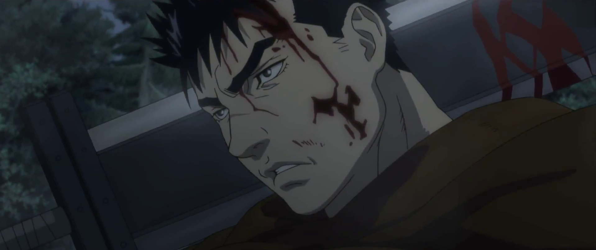
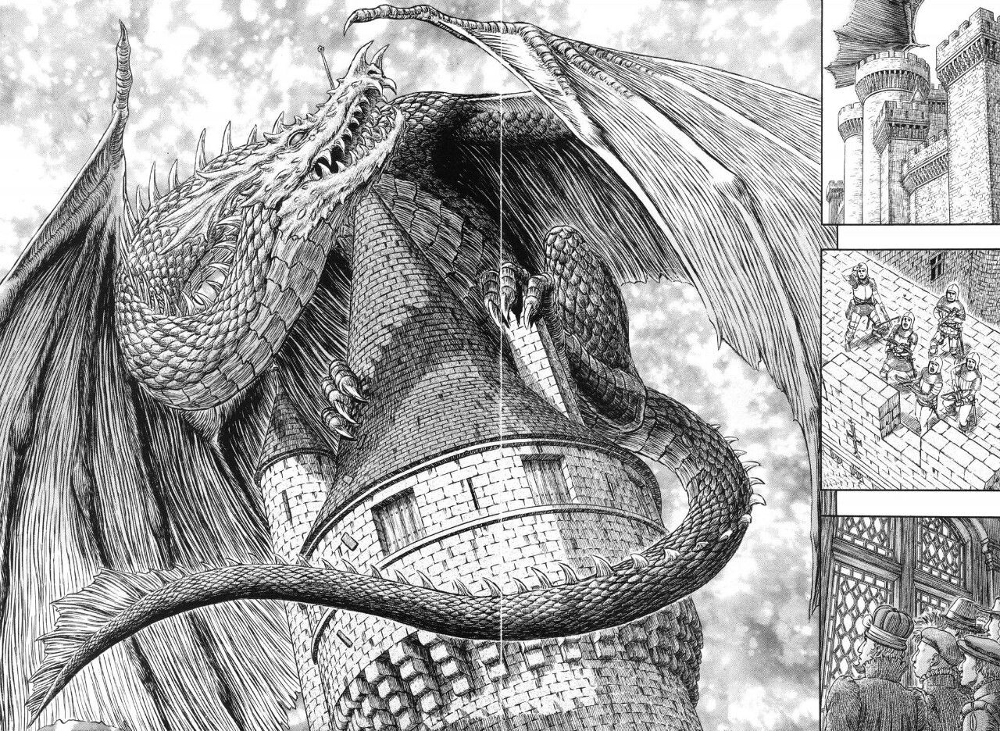

Берсерк (1997г-1998г)
1 сезон

«Берсерк» — первая экранизация манги «Берсерк» в виде 25-серийного аниме, созданная студией Oriental Light and Magic. Аниме «Берсерк» выходило в эфир Nippon TV с 7 октября 1997 года по 31 марта 1998 года. Аниме основано на арках манги «Черный мечник» и «Золотой век», причем лишь первая вступительная серия воспроизводит самое начало «Черного мечника», а остальные 24 охватывают «Золотой век» — с некоторыми пропусками и с некоторыми добавлениями. Миура продолжал работать над мангой параллельно с работой студии Oriental Light and Magic над сериалом, и сама по себе арка «Золотой век» на момент выхода аниме еще не была завершена. Это привело к тому, что аниме обрывается на неожиданном месте во время Затмения, без объяснения того, как Гатсу удалось спастись. В первой серии, основанной на арке «Черный мечник» и происходящей уже после Затмения, один из персонажей оставляет примечательную ремарку о том, что Гриффит стал королем Мидленда — это собственное решение создателей сериала, предвосхищающее воскрешение и воцарение Гриффита в манге много глав спустя.
Аниме Берсерк (1997г-1998г)
Перейти к просмотру аниме Берсерк 1997г
Фильмы по Берсерку(2012г-2013г)
Berserk: Ougon Jidai-hen I — Haou no Tamago (2012г)
Berserk: Ougon Jidai-hen — трилогия фильмов, в которой изложены те же события, что и в первом сезоне аниме, но с измененной рисовкой и дополнительными сценами. Сюжет сжат в более короткий хронометраж, поэтому трилогия не раскрывает персонажей и историю так, как это делает аниме-сериал. Однако в трилогии есть персонажи, которые появятся во втором сезоне и сыграют в нем важную роль. Первый фильм знакомит со вселенной аниме и главным героем — Гатс много сражается, не имея определенного пути, пока не встречает отряд «Соколов». Он знакомится с Гриффитсом и вступает в его отряд, найдя смысл жизни и хорошего друга.
Berserk: Ougon Jidai-hen II — Doldrey Kouryaku (2013г)
Вторая часть трилогии рассказывает о том, как Гриффитс решает захватить Мидлэнд, который был оплотом королевства. У него есть только 5 тысяч всадников, тогда как за городскими стенами скрываются 30 тысяч воинов.
Berserk: Ougon Jidai-hen III — Kourin (2013г)
Финальная и самая важная часть трилогии. Первый сезон аниме заканчивается на обрезанной концовке, поэтому зрители могли только гадать, чем же закончилась история, начатая в первом сезоне. Третий фильм заполняет эту дыру и дает ответы на все вопросы.
Берсерк (2016г-2017г, 2022г)
2-4 сезоны

Боль, кровь и слёзы. На престол восходит новый правитель. Его слуги, подручные демоны безнаказанно творят бесчинства в городе. Все меняется когда в город, скрытый темнотой ночи, попадает тяжёлый воин. С разнообразным вооружением для самых непредвиденных моментов, в броне, тело его все покрыто шрамами – черный мечник. Его меч настолько огромен, что может сравниться с его лютой злобой к королю и демонам.Эта история по сути военная драма. Происходящая в средневековье, включает в себя хоррор перемешанный с фэнтези. В центре действий Гатс, его судьба. В прошлом наёмник, а теперь он охотится за демонами. Его путь определенный свыше. Предательство, верность, магия, темные существа и эльфы.«Наша судьба принадлежит нам, не ей решать, как и когда нам умереть!» - вот основная идея Берсерка. Эта мысль открывается на протяжении всего сериала. И еще одно, может ли человек переступить грань дозволенного, уйти за точку невозврата и где это придел способностей человеческого вида в достижении мечты.
Аниме Берсерк (2016г-2017г, 2022г)
Перейти к просмотру аниме Берсерк (2016г-2017г, 2022г)
Манга
впринципе все сезоны
Наёмник Гатс, по прозвищу Чёрный Мечник, странствует по магическому королевству Мидланд, вооружившись двухметровым мечом «Убийцей Драконов» и уничтожая на своём пути полчища демонов, охотящихся на него. Не жалея ни себя, ни тех, кто попадается ему под руку, он неустанно движется вперёд, ведомый только безудержной жаждой мести. Но откуда она берёт своё начало? Какое тяжкое бремя несёт на своих плечах Гатс? И есть ли шанс на простое светлое будущее у того, кто воочию повидал сам ад?..
«Берсерк» — это тёмная и печальная сага о неистовых жестоких сражениях, недостижимых мечтах, дружбе и предательстве, а также печальной судьбе одного человека.
Уже все сказано по некольку раз возьмите и прочтите уже..
Манга Берсерк
Перейти к чтению аниме Берсерк